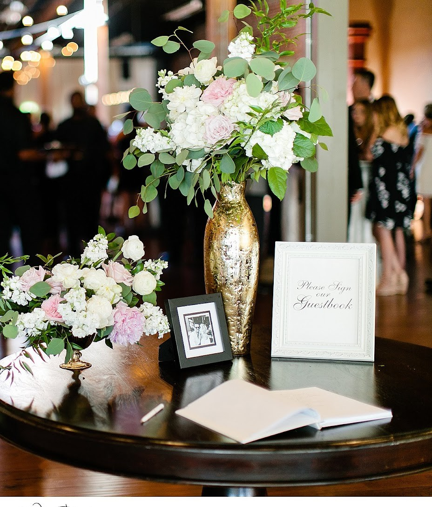

Visit The Old Glass Place
A historic wedding and event venue in downtown Springfield, in a restored 1908 and 1914 era building at 521 E St Louis St.

Find the venue
521 E St Louis St
Springfield, MO 65806
The venue sits in downtown Springfield, in the restored building with the painted sign on its brick wall.
Hours
Sunday through Friday
9:00 AM to 5:00 PM
Saturday
9:00 AM to 11:00 PM


Call to ask
Questions about a date? Call (417) 501-8035.
Call (417) 501-8035